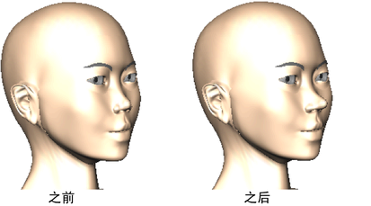
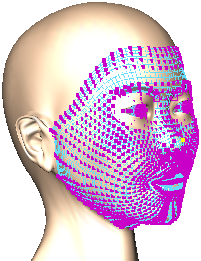
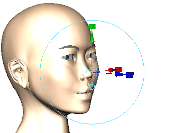
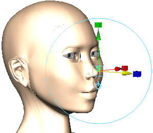

该示例显示了如何使用“软修改”(Soft Modification)变形器对称修改角色脸上的鼻子。

- 在角色鼻子的中心选择单一顶点。

- 在“装备”(Rigging)菜单集中，选择“变形 > 软修改”(Deform > Soft Modification) >
 ，然后设置以下内容：
，然后设置以下内容：
- 启用“保留历史”(Preserve History)
- 禁用“未选择遮罩”(Mask Unselected)
- 启用“在当前选择周围衰减”(Falloff Around Selection)
然后单击“软修改”(Soft Modification)。
 - 使用操纵器创建一个变形。

- 调整 softMod 属性（例如，“衰减半径”(Falloff Radius)、“衰减曲线”(Falloff Curve)）来以交互方式调整变形的效果（例如，将新的鼻子形状平滑地混合到脸的其余部分）。